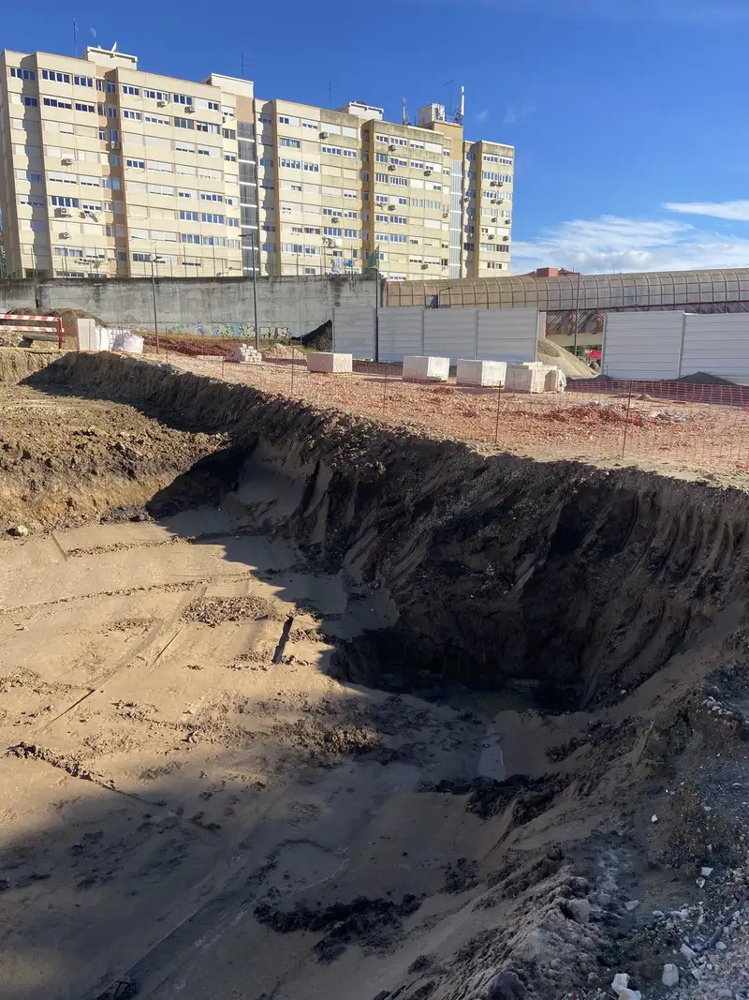

Working prototype / Field test next
From DWG plan to measured progress.
WorkGuardAI reads the DWG plan you already have and measures groundwork progress from ordinary site photos, location by location. The prototype works on a real project's plan and imagery. Now we are looking for the first pilot site.

Design tokens (for review)
Colour
Page#FBFAF7
Surface#FFFFFF
Ink, navy#0F1B3D · 16.2:1
Ink 2#3E4A66 · 8.5:1
Ink 3, labels#5F6880 · 5.3:1
Hairline#E4E1D8
Brand indigo#5255E0 · 5.4:1
Indigo, hover/links#3D40C7 · 7.3:1
Indigo tint#EEEEFC
Status OK (mockups only)#17845A · 4.7:1
Status warn (mockups only)#9A5F00 · 5.2:1
Type
DISPLAY · OUTFIT 500
38→68pxLocation by location.
38→68pxLocation by location.
H2 · OUTFIT 500
28→44pxWhat it does today
28→44pxWhat it does today
H3 · OUTFIT 500
20pxDWG to coordinate map
20pxDWG to coordinate map
BODY · INTER 400
17px / 1.6Each new photo is measured for pixel and colour change at its plan coordinate. Kaivuutyön edistyminen mitataan. Gravearbejdets fremdrift. Përparimi i punimeve.
17px / 1.6Each new photo is measured for pixel and colour change at its plan coordinate. Kaivuutyön edistyminen mitataan. Gravearbejdets fremdrift. Përparimi i punimeve.
DATA · JETBRAINS MONO
12px, trackedX 412.50 · Y 118.00 · DEPTH −1.80 M
12px, trackedX 412.50 · Y 118.00 · DEPTH −1.80 M
Space (4px base)
4 · 8 · 12 · 16 · 24 · 32 · 48 · 64 · 96 · 128 — container 1200px, gutter 16 / 32 / 40px, radius 6px, lines 1px